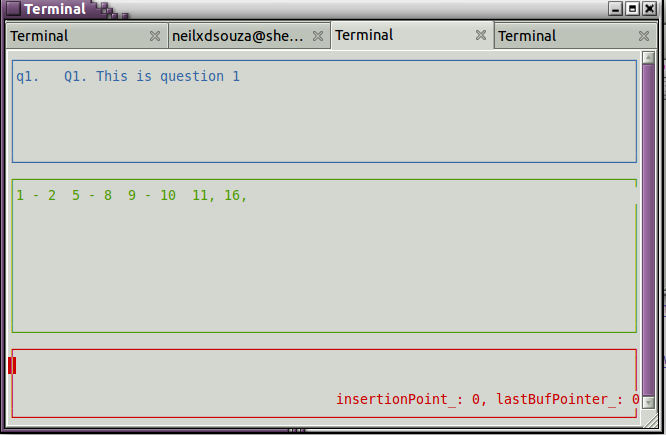

qscript is a language to help script questionnaires for market research for data entry. The project is open source, released under the GNU GPL version 2 license.
Currently, qscript is good for scripting Pen and Paper Interview (PAPI) questionnaires. The language supports routing of questions using conditional logic, simple looping, masking of codes and mutually exclusive codes.
Load qscript related links in Left Frame by clicking this link
Here is a small script to give you a feel for the language
Example Script
inp_simple_example {
q1 "Q1. This is question 1" sp int32_t (5-8, 1-2, 9-10, 11, 16);
stubs agree5 =
" strongly disagree" 1
" disagree " 2
" neutral " 3
" agree " 4
"strongly agree" 5;
if (q1 in (1) ) {
q2_1 "Q2.1 This is question 2_1" sp int32_t agree5;
} else {
q2_2 "Q2.2 This is question 2_2" sp int32_t agree5;
}
stubs stuff =
"USB pen drive" 1
"Keys" 2
"Wallet" 3
"Watch" 4
"Pen" 5;
q3 "Q3. This is question 3" mp(3) int32_t stuff;
}
Compiling a script
Compiling the above script. Suppose the file is named inp_simple_example. It can be compiled to an exe with the following commands
Compilation on GNU/Linux
$ qscript -n -m -o -f inp_simple_example
Compilation on Windows - you must pass the -s option to generate a static binary
$ qscript -s -n -m -o -f inp_simple_example
The -n flag is for a curses binary, the -m option creates a nice mapfile layout, the -o option is a optimization for save/restore jumps.
You can run the generated executable like this.
$ .\inp_simple_example.exe
Here is a screenshot of what the running exe looks like:
System Requirements